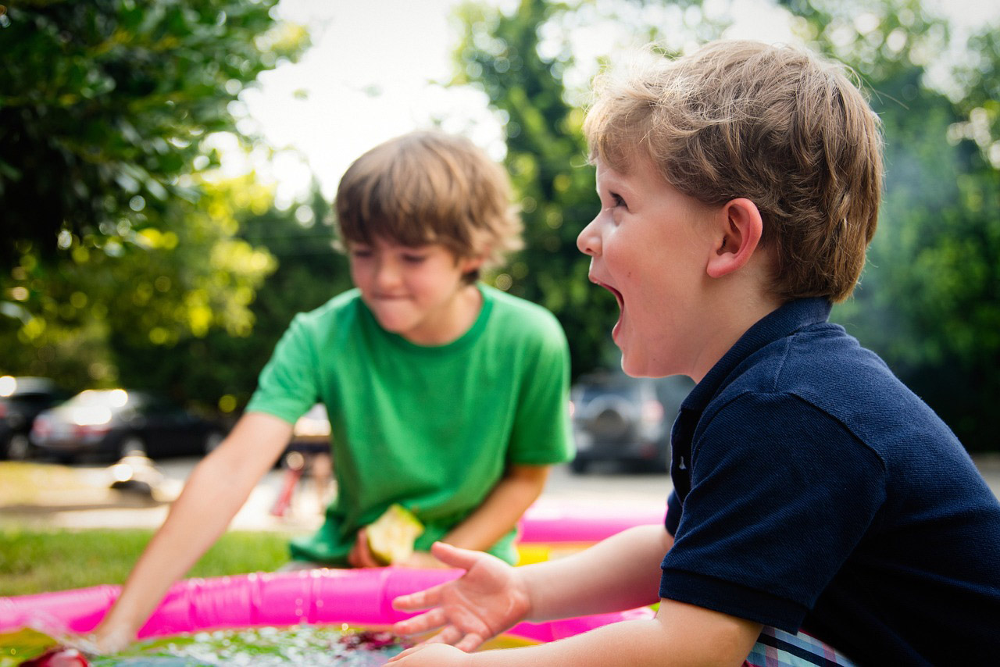
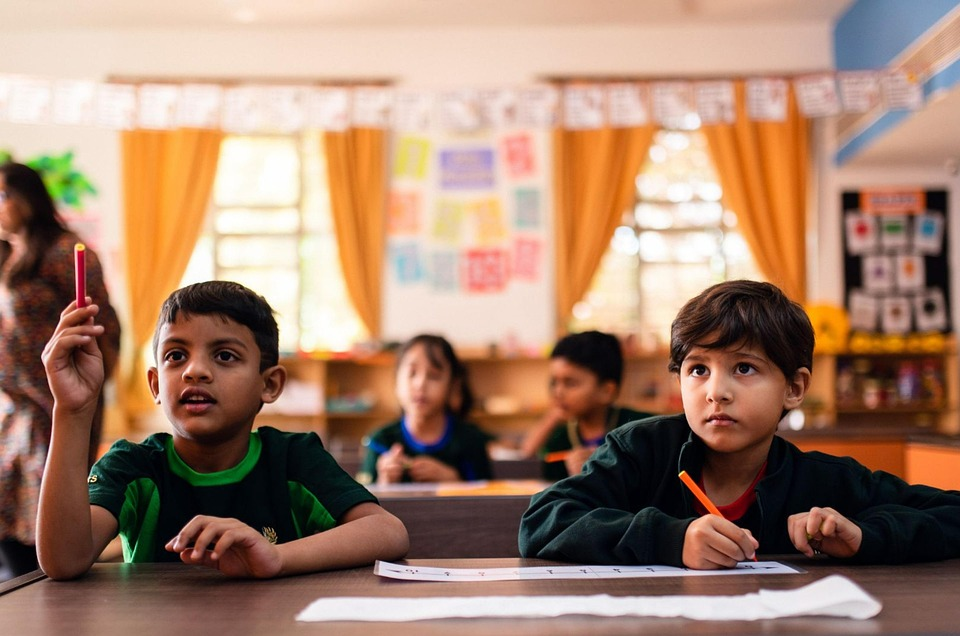

Der Tagesablauf
Kindergarten/Krippe
Unsere Öffnungszeiten sind Mo. - Fr. von 7:00 bis 15:30 Uhr.
Im Morgenkreis wird der Tagesablauf besprochen. Die Kinder haben hier die Möglichkeit Ihre Wünsche und Ideen zu äußern. Beobachtungen unsererseits werden mitgeteilt und dienen so als Impulsgeber für evtl. Projektarbeiten. Mit Hilfe von Symbolen erkennen die Kinder die einzelnen Aktionen und können so ihren Eltern vorlesen und berichten was sie gemacht haben.
Der Tagesablauf wird wie folgt gestaltet:
7:00 - 8:00
Frühöffnung
8:30 - ca 9:00
Morgenkreis
Begrüßung, was passiert heute?
Wer möchte wo mitmachen?
Wünsche und Ideen äußern.
Ab 9:00
Kleingruppenarbeit
wie schulvorbereitende Förderung,
Projektarbeit...
Bis ca. 10:30
Freies Spiel
in den Funktionsbereichen
10:30 - 11:30
Aufenthalt im Freien
(Spielplätze, Innenhof, Garten,
Stadtteilerkundung)
11:30 - 12:15
Mittagessen
12:15 - 13:30
Ruhezeit
Mittagsschlaf für die Kleinen,
Leserunde für die Größeren,
ruhiges Freispiel
13:30 - 14:00
Nachmittagskreis
14:00 - 14:30
Brotzeit
14:30 - 15:30
Wir sind im Innenhof bzw. Garten / Abholzeit
Hort
Seit 2014 bieten wir 15 Schulkindern eine Betreuung im Hort. Da die Kinder die Räumlichkeiten und das Personal aus der Kindergartenzeit kennen, wird ihnen der Übergang so erleichtert. Der Hort wird von einer Erzieherin und einer Kinderpflegerin betreut.
Der Tagesablauf wird wie folgt gestaltet:
11:30/12:15 - 12:45
Schulschluss - Aufenthalt im Freien
(auf dem Schulhof) Die Kinder werden vom Schulhaus abgeholt.
12:45 - 13:30
Mittagessen
Die Kinder, die um 13:00 Uhr Schulschluss haben, kommen selbstständig in die Einrichtung. Freispiel.
Ab 13:30
Hausaufgaben und Freispielzeit
(je nach Bedarf); In Rücksprache mit den Eltern dürfen die Kinder alleine nach Hause gehen.